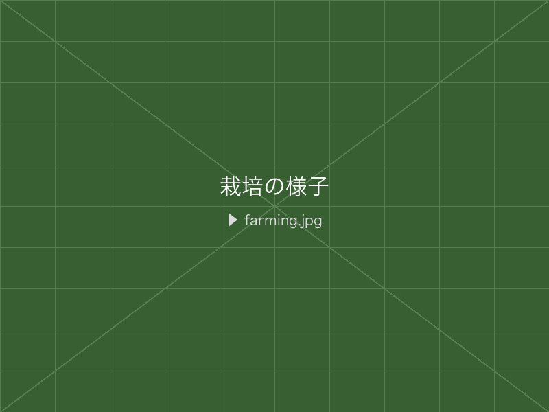
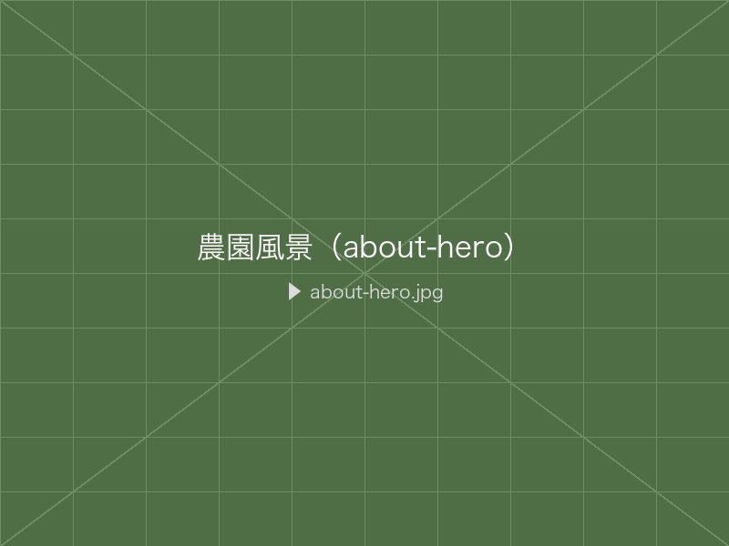
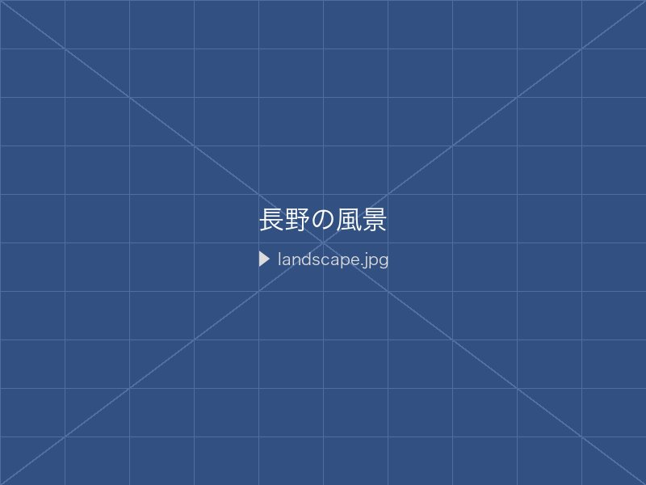
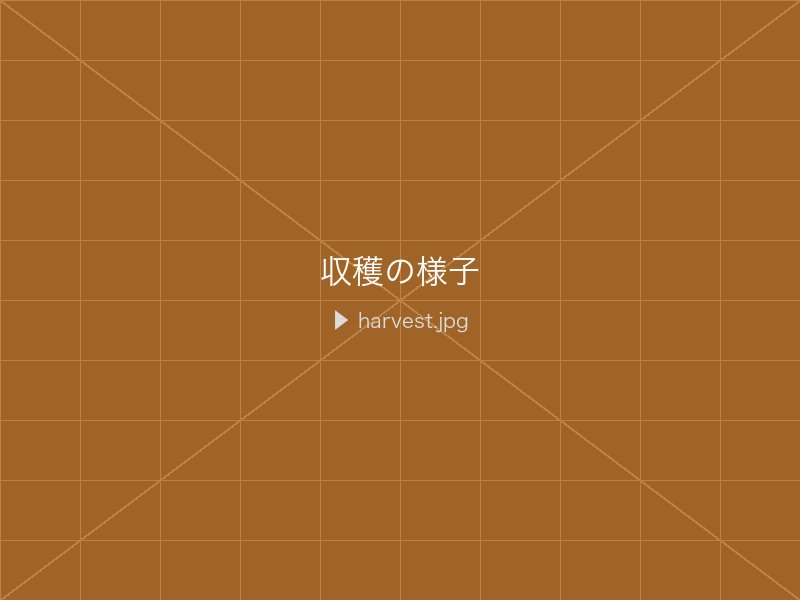

減農薬・丁寧な栽培
農薬の使用を必要最低限に抑え、土づくりから丁寧に。 安心してお召し上がりいただける果物を届けるために、 一本一本の樹と向き合っています。
山嵜農園は、長野県須坂市日滝の豊かな自然のなかで果樹を育てています。 四季折々の気候と信州の清らかな水・空気が、 味わい深い果物を育んでいます。
ぶどう・りんご・さくらんぼ・柿、それぞれの果物が
一番おいしい季節に、
収穫したばかりをお届けします。


農薬の使用を必要最低限に抑え、土づくりから丁寧に。 安心してお召し上がりいただける果物を届けるために、 一本一本の樹と向き合っています。

長野県の高い標高と大きな寒暖差は、果物に豊かな糖度と 香りをもたらします。自然の恵みをそのまま活かした、 信州ならではの味わいです。

機械に頼らず、ひとつひとつ手で丁寧に収穫しています。
果物を傷つけず、鮮度を保ったまま。
採れたての美味しさをお届けすることを
大切にしています。
それぞれの果物が一番おいしい季節にお届けします。
シャインマスカット・ナガノパープル・クイーンニーナ・巨峰など複数品種を栽培。品種ごとに異なる風味をお楽しみいただけます。
ふじ・秋映・シナノゴールドなど信州を代表する品種を栽培。甘みと酸味のバランスに優れています。
甘みと酸味のバランスが絶妙。贈り物にも人気です。
秋の深まりとともに熟す、甘みの強い柿です。